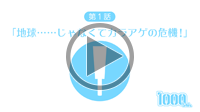
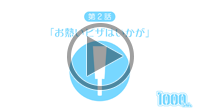
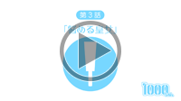
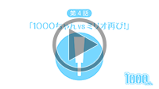
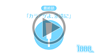

【第6話】
2015.12.26公開
【あらすじ】
ついに1000ちゃんたちの前に姿を現したワルメルグ星の皇帝ジーロ。
1000ちゃん・ミリオ・プリマの3人は、ラーカゲーア星の秘宝『聖なるカラアゲ・レシピ』を守り抜くことはできるのか？
シーズン2ここに完結！
【第1話】
2015.6.2公開
【あらすじ】
厚木で元気に宣伝のお仕事を頑張っている『1000ちゃん』。
ある日、屋上にいる1000ちゃんの下に、空から船のようなものが降ってきて…！？
ショートドラマシーズン2いよいよ開幕！【第2話】
2015.6.30公開
【あらすじ】
悪の皇帝ジーロから一族の秘宝を守り、厚木の街にやって来たプリマ。ミリオ巻き込んで、騒動は次第に大きくなっていく。
プリマを守るため、大好きなカラアゲを守るため、1000ちゃんが立ち上がる！【第3話】
2015.7.30公開
【あらすじ】
悪の皇帝ジーロの先兵として、ワルメルグ星から厚木の街に次々とやってくるマズマズ獣。
1000ちゃんの活躍の裏で、プリマにはなにやら悩みがある様子……！？【第4話】
2015.9.1公開
【あらすじ】
仲良くなってしまったとはいえ、密かに打倒1000ちゃんを目論んでいた天才科学者ミリオ。
第1話開始の時から作り続けていたロボがついに完成し、1000ちゃんに挑む！
【第5話】
2015.11.2公開
【あらすじ】
すっかり地球の暮らしにも慣れた、ラーカゲーア星のお姫様プリマ。
1000ちゃん、ミリオと楽しい毎日を送っているなかで、
密かにある決意を固めていた……【第6話】
2015.12.26公開
【あらすじ】
ついに1000ちゃんたちの前に姿を現したワルメルグ星の皇帝ジーロ。1000ちゃん・ミリオ・プリマの3人は、ラーカゲーア星の秘宝『聖なるカラアゲ・レシピ』を守り抜くことはできるのか？シーズン2ここに完結！
-
【プロローグ】
2014.5.1公開
【あらすじ】
元気いっぱいに毎日を送っている1000ちゃんの影でなにやら怪しい動きが･･････！？
ショートドラマがより楽しめるプロローグ編公開！ -
【エピソード1】
2014.5.9公開
【あらすじ】
自らの研究の為に1000ちゃん捕獲に乗り出したDr.ミリオ。
そして……1000ちゃんにミリオの罠が迫る！
スペシャルショートストーリー、ついに開幕！
-
【エピソード2】
2014.6.6公開
【あらすじ】
新たな罠を用意して1000ちゃんに近づくミリオとコローネ。
だが1000ちゃんのそばに謎の人物が現れて……！？ -
【エピソード3】
2014.7.4公開
【あらすじ】
「ヌルヌルヌメヌメしたもの」が1000ちゃんの弱点であることを知って、再び1000ちゃん捕獲に乗り出すミリオだが、なぜか自分が罠に嵌ってしまって…！？
-
【エピソード4】
2014.9.26公開
【あらすじ】
運営さんに頼まれて、なにやら怪しげなクイズ番組に出演することになった1000ちゃんとミリオ。
何かを企む運営さん相手に、2人は無事帰ってくることができるのか！？ -
【エピソード5】
2014.10.17公開
【あらすじ】
出演したクイズ番組の景品の旅行券を使って温泉にやってきた1000ちゃん一行。
1000ちゃん捕獲を諦めていないミリオは、この旅行でもなにやら企んでいるようだが……。 -
【エピソード6前編】

2014.11.14公開
【あらすじ】
ついにミリオの罠に落ちてしまった1000ちゃん。
だが、なにやら周りの様子がおかしくて……
厚木の街を、未曾有の恐怖が襲う！！ -
【エピソード6後編】
2014.11.21公開
【あらすじ】
暴走したダクリュオンと対峙した1000ちゃん。
1000ちゃんとミリオは、厚木の街を救うことができるのか！？
ショートドラマ感動の最終回！